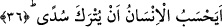
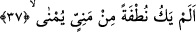
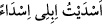
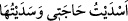

36. İnsan, kendisinin başıboş bırakılacağını mı sanır!
Yâni, kendi hâline bırakılıp hayat süreceğini, kendisine hiçbir mükellefiyet
yüklenmeyeceğini, yaptığının karşılığını görmeyeceğini mi sanıyor? Bâzı âlimlere göre
bu âyet-i kerîmenin mânâsı: “İnsan, kabrine terk edileceğini ve bir daha dirilmeyeceğini
mi sanıyor?” Âyette yer alan “südâ” başıboş anlamına gelir. Arapçada bu kök; “/Develerimi başıboş bıraktım” şeklinde kullanılır. Yine aynı kökün şu
şekilde kullanımları vardır: İhtiyacını karşılayıp yerine getirmediğin zaman: /İhmal etmek, yerine getirmemek anlamına kullanılır.
İnsanın bu zannını inkâr; yâni yerinde görmemenin tekrar edilmesi bir yandan insanın
yeniden dirilmeyi inkâr ettiğinin tekrarı, diğer yandan ise öldükten sonra dirilmenin
sahih olduğuna delili içerir. Biraz açarsak; insanı mükellef; yâni sorumlu tutmadan
kendisine güç vermek, bir takım âletler bahşetmek ve bâzı işleri yapabilme imkânını
vermek, iyilikleri emredip kötülükleri yasaklamak ve gerçeğin bu olduğunu iddiâ etmek;
“Allah Teâlâ’nın çirkin amellere râzı olduğunu söylemek” demektir. Bu da mümkün
değildir ve böyle bir husus Allah Teâlâ’nın hikmeti ile bağdaşmaz. Şu hâlde dünyada
mutlaka mükellefiyetler olacaktır. Yükümlülük getirmek kerîm ve rahîm olan Allah
Teâlâ’ya ancak, îman edip sâlih amel işleyenlerle yeryüzünde fesat çıkaranları
birbirinden ayırması, muttakileri günahkârlarla bir tutmaması ve her insana
çabaladığının karşılığını vermesi durumunda lâyıktır. Yapılan işin karşılığını vermek
bazen dünyada olmayabilir. Şu hâlde mutlaka öldükten sonra dirilmek ve kıyâmetin
kopması kaçınılmazdır. Dünya mücâzât/yapılan amellere karşılık verme yeri değildir.
Çünkü dünya dar bir alandır.
Büyüklerden birisi şöyle der: Her kim amellerinin ve ahvâlinin sonuçlarını bu
dünyada acele ile isterse edepsizlik etmiş, dünya imtihanının hakîkatine uymayan bir
şekilde muâmele etmiş olur.
37. O, (döl yatağına) akıtılan meninin içinden bir nutfe (sperm) değil miydi?
Bu son cümle yukarda zikredilen zannın çürük olduğuna ve temelsiz bulunduğuna dâir
gelmiş bir cümledir. Bu cümlenin yaklaşımı ve odak noktası şudur: Kâfirler öldükten
sonra yeniden dirilmeyi uzak bir ihtimal görünce Allah Teâlâ bunun olabileceğine
yaratılışın başlangıcını delil göstermektedir.
İbn Şeyh der ki: Bu âyet-i kerîme öldükten sonra dirilmenin doğruluğuna yapılan
ikinci bir delil getirmedir. Âyetin başındaki “istifhâm/soru” azarlama anlamınadır.